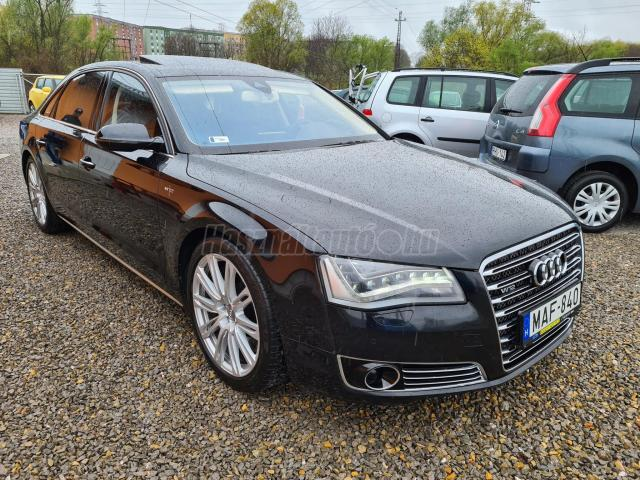

Audi A8 6.3 W12 FSI QUATTRO

Leírás:
Ár:9.999.000 Ft
Évjárat:2012/2
Kivitel:Sedan
Kilométeróra állása: 292 000 km
Teljes tömeg: 2 655 kg
Hengerűrtartalom: 6 299 cm3
Teljesítmény: 368 kW,500 LE
Sebességváltó fajtája: Automata
Mustang